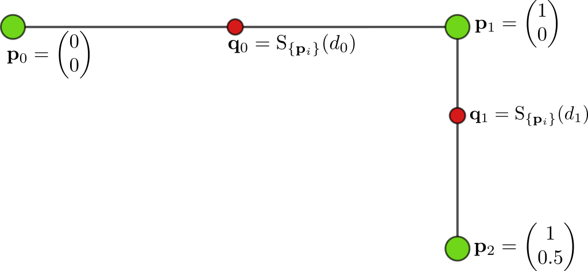
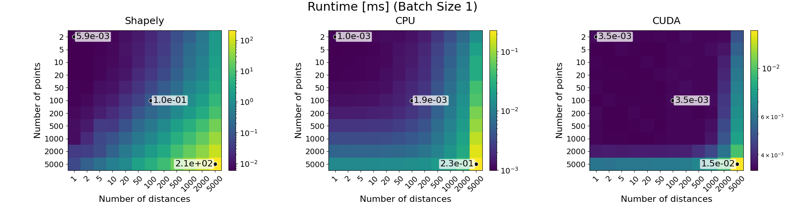
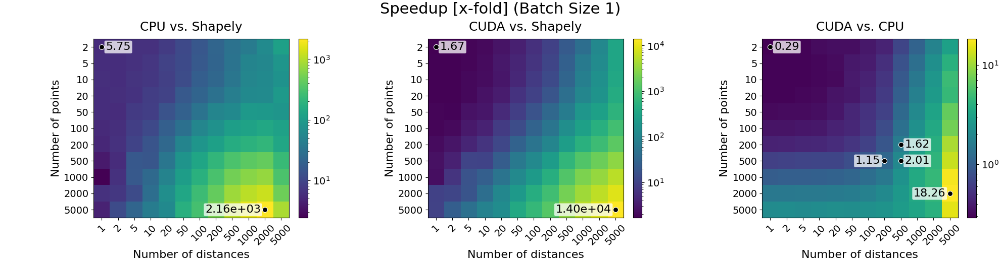
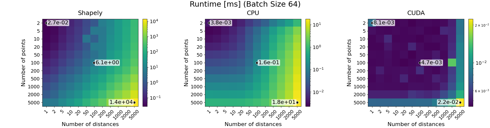
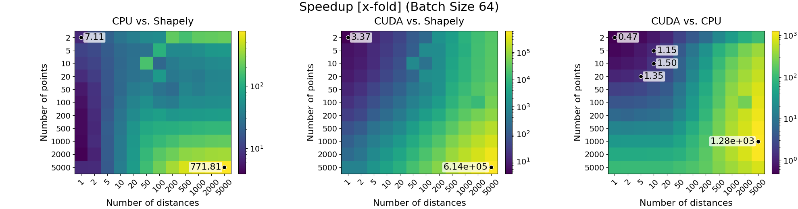

Introduction
Polyline Sampling
Functionality
The lane_helpers package provides utilities for lane-processing workloads.
The main functionality is batched polyline interpolation. A polyline is a sequence of points in the space \(\mathbb{R}^D\), written as \(\mathbf{p}_i\), where each pair of consecutive points defines one line segment.
Given sampling distances \(d_j\) measured from the first point \(\mathbf{p}_0\) along the
polyline, the sampling function interpolate() returns the
corresponding sampled points \(\mathbf{q}_j\).
{kind=link}

Two-segment polyline sampled at two distances. The input points are shown as green circles, and the sampled points are shown as red circles.
Sampling distances do not need to be sorted. Distances can be provided either as absolute distances along the polyline or as fractions of each polyline’s total length.
Point coordinates are not limited to 2D. The coordinate dimension is the last tensor dimension, and 2D, 3D, and higher-dimensional coordinates are supported.
For batches with variable numbers of points or distances, use
interpolate_var_size_batch() with
RaggedBatch inputs.
Functionality to compute the total length of each polyline is also provided (through
lengths() and lengths_var_size_batch()).
Runtime Evaluation
The runtime evaluation compares batched interpolation for both CPU and CUDA against a Shapely LineString reference over a grid of point counts, numbers of sampled distances, and batch sizes. Runtime plots report milliseconds per interpolation call, while speedup plots report the x-fold improvement over the Shapely reference.
See also
The evaluation script is available at packages/lane_helpers/evaluation/shapely_evaluation.py. It can be
used to run the benchmark sweep for different problem sizes on your target system.
Performance depends on the batch size for both CPU and CUDA execution. CUDA parallelism scales with the number of polylines in the batch, so very small batch sizes may not fully utilize the GPU.
For practical problem sizes, it is recommended to choose the implementation based primarily on where the tensors already live: CPU inputs should generally stay on CPU, and CUDA inputs should generally stay on CUDA. Moving tensors only to use a different implementation can dominate the interpolation cost.
The plots below focus on batch sizes 1 and 64 as examples. The evaluation script runs for more batch sizes by default, and other batch sizes can be easily added.
Note
The following measurements are intended as directional guidance. Exact runtimes depend on the used system, with performance primarily influenced by the CPU and GPU.
The plots shown here were generated on a system with an NVIDIA RTX 5000 Ada Generation GPU and an
AMD Ryzen 9 7950X 16-Core Processor.
Note
In the following runtime plots, markers highlight the smallest measured problem size, the largest measured problem size, and the 100-point/100-distance cell.
In the speedup plots, markers highlight the smallest measured problem size and the largest speedup. If speedup is not above 1x everywhere, they also mark representative cells near the first matching point-count and distance-count configuration where speedup exceeds 1x.
Batch size 1 shows behavior for the smallest batch configuration in the benchmark:
{kind=link}

Runtime comparison for batch size 1. Rows vary the number of polyline points, and columns vary the number of sampled distances.
{kind=link}

Speedup comparison for batch size 1.
For larger batch sizes, CUDA can expose more parallel work and its speedup over the other methods typically becomes more pronounced. Batch size 64 shows this behavior:
{kind=link}

Runtime comparison for batch size 64.
{kind=link}

Speedup comparison for batch size 64.